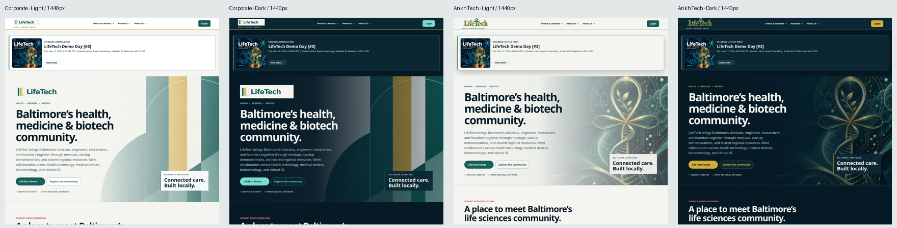
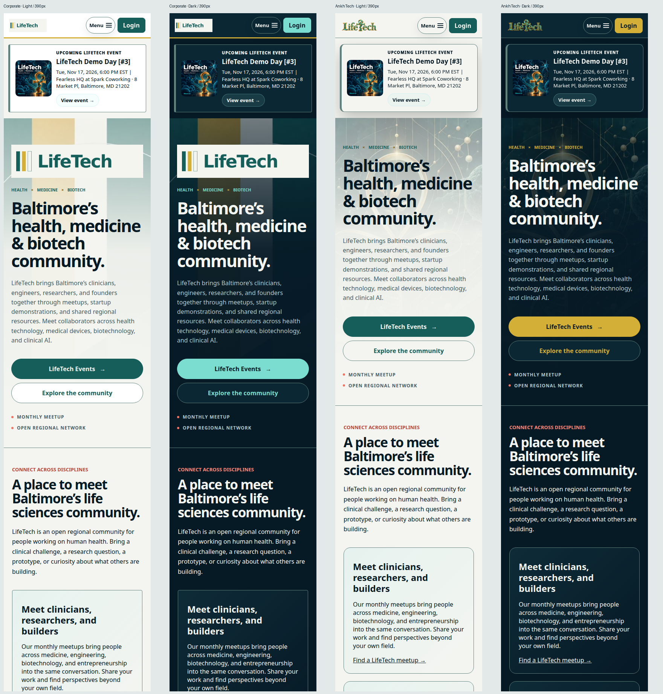
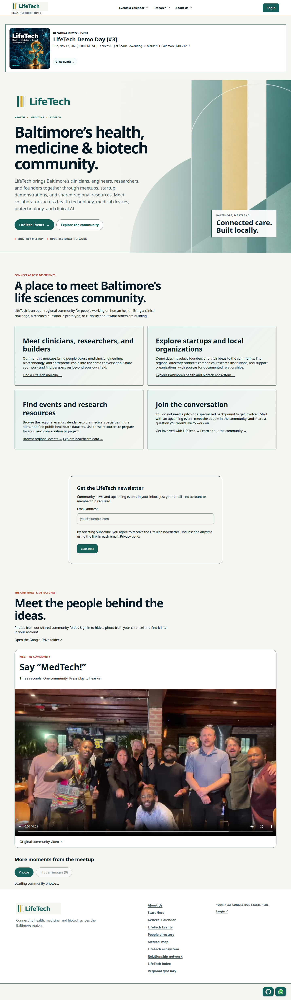
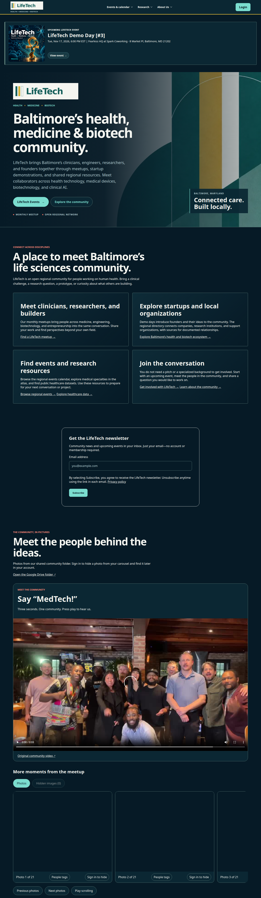
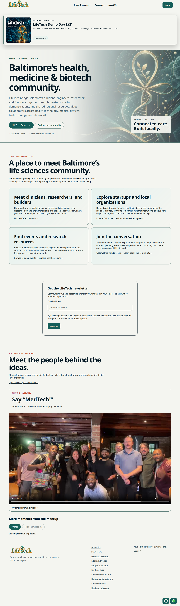
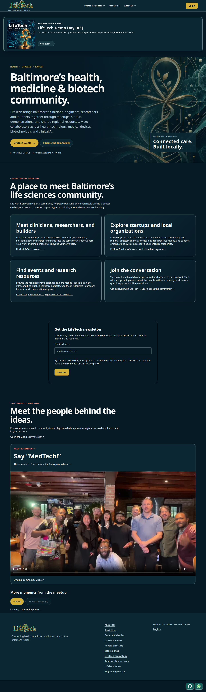
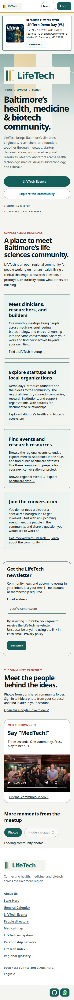
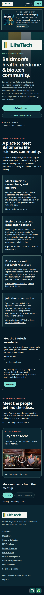
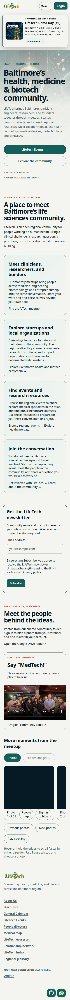
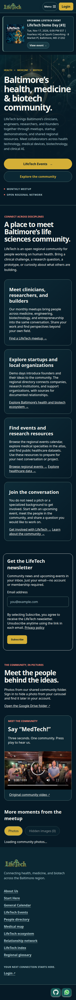

The top bar now has three sections: Events & calendar, Research, and About Us. About Us contains the branding guide and personal theme previews. Only verified organization admins receive the explicit Make default layout action.
| Corporate · Light | Strongest nonprofit presentation The off-white canvas, teal typography and three-bar wordmark create the clearest institutional hierarchy. Restrained card corners and the gold rule give it a consistent identity. The large hero wordmark makes this layout slightly taller than AnkhTech, but its actions stay clear on mobile. |
|---|---|
| Corporate · Dark | Structured and readable The same geometry stays recognizable in deep ink. Teal actions and off-white text separate controls from the artwork. The light wordmark tile is deliberately high contrast; it is visually prominent without covering the headline. |
| AnkhTech · Light | Softer scientific character The ankh artwork and traditional wordmark feel more expressive than Corporate. The light overlay protects reading space and softens the gold detail. It remains legible, although the illustration competes more strongly with the copy than the geometric Corporate background. |
| AnkhTech · Dark | Most distinctive medical identity Gold actions and the ankh artwork work naturally against deep teal. Text occupies a clear, darker area of the hero while the illustration sits to the right on desktop. On mobile, the overlay keeps artwork behind the text subdued. |


Click a screenshot to open the full page. Each mode also includes an open About Us menu and a header crop.








The main gallery contains anonymous, read-only captures of the deployed public homepage. Synthetic local event and account fixtures were used separately to verify permissions and narrow header layouts. All four visual combinations were reviewed at 1440px and 390px. Additional header and overflow checks covered guest and signed-in groups at 320px, 768px and 1024px. System mode follows the device's light or dark preference. All public previews were checked for zero server writes; only the admin's explicit default-save action writes. No authenticated production account was used for screenshots; all live non-read requests were blocked. Deployed commit: 08bf585.